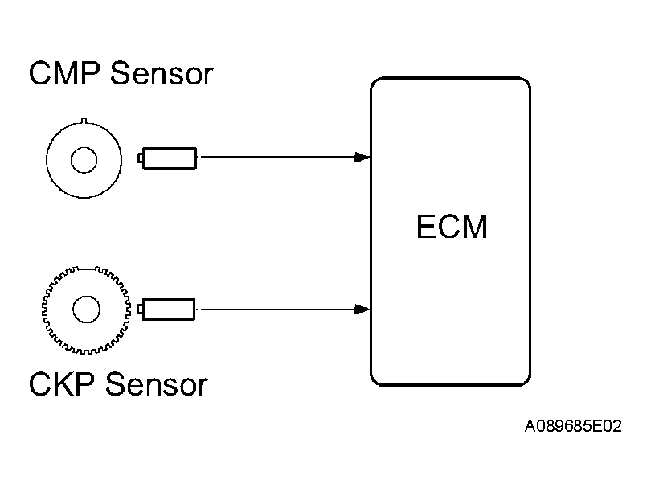

DTC P0300 Random / Multiple Cylinder Misfire Detected; DTC P0301 Cylinder 1 Misfire Detected; DTC P0302 Cylinder 2 Misfire Detected; DTC P0303 Cylinder 3 Misfire Detected; DTC P0304 Cylinder 4 Misfire Detected: Description

Courtesy of © TOYOTA, LICENSE AGREEMENT TMS1002When the engine misfires, high concentrations of hydrocarbons (HC) enter the exhaust gas. Extremely high HC concentration levels can cause increases in exhaust emission levels. High concentrations of HC can also cause increases in the Three-Way Catalytic Converter (TWC) temperature, which may cause damage to the TWC. To prevent these increases in emissions and to limit the possibility of thermal damage, the ECM monitors the misfire rate. When the temperature of the TWC reaches the point of thermal degradation, the ECM blinks the MIL. To monitor misfires, the ECM uses both the Camshaft Position (CMP) sensor and the Crankshaft Position (CKP) sensor. The CMP sensor is used to identify any misfiring cylinders and the CKP sensor is used to measure variations in the crankshaft rotation speed. Misfires are counted when the crankshaft rotation speed variations exceed predetermined thresholds. If the misfire exceeds the threshold levels, and could cause emission deterioration, the ECM illuminates the MIL and sets a DTC.
| DTC No. | DTC Detection Condition | Trouble Area |
|---|---|---|
| P0300 | Misfiring of random cylinders is detected (2 trip detection logic) |
|
| P0301 P0302 P0303 P0304 |
Misfiring of each cylinder is detected (2 trip detection logic) |
HINT:
When the DTCs for misfiring cylinders are recorded repeatedly but no random misfire DTC is recorded, it indicates that the misfires have been set and recorded at different times. Random misfire codes are recorded only when several misfires occur at the same time.
Reference: Inspection using the oscilloscope
With the engine idling, check the waveform between terminals #10 to #40 and E01 of the ECM connectors.
| Item | Content |
|---|---|
| Terminals | #10 to #40 - E01 |
| Equipment Settings | 20 V/DIV., 100 or 1 ms/DIV. |
| Conditions | Idling |
HINT:
The correct waveform is as shown.